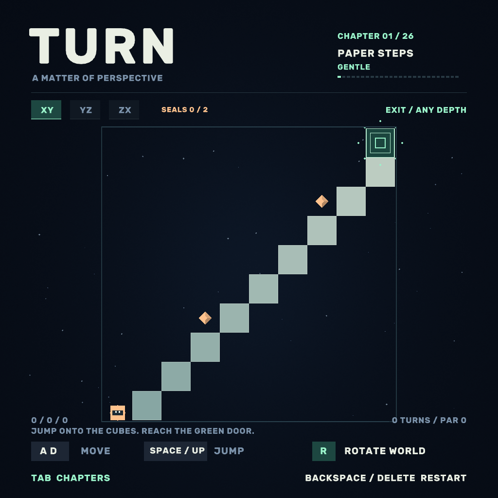
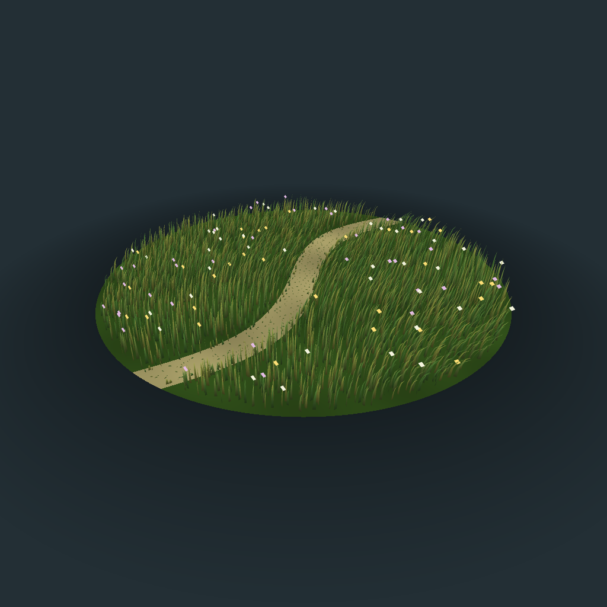
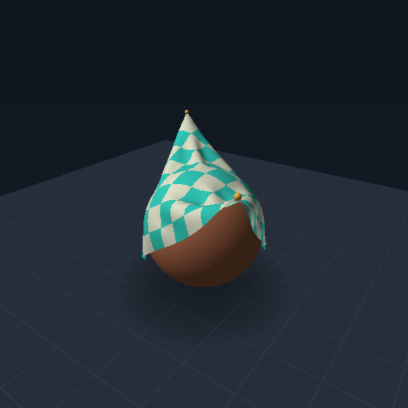
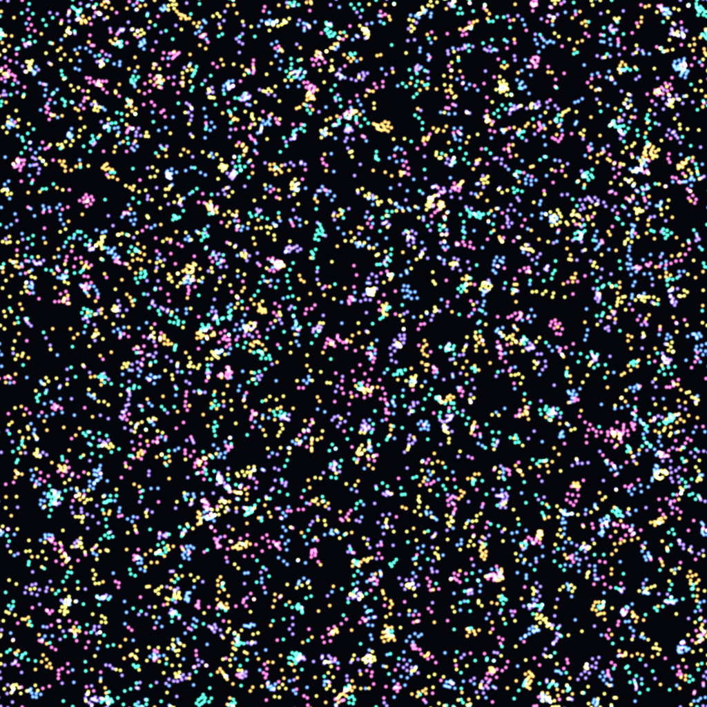
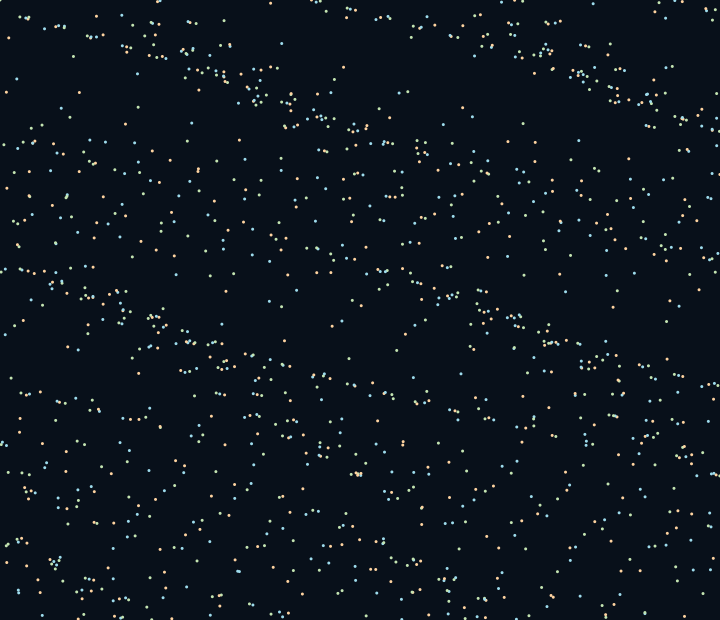
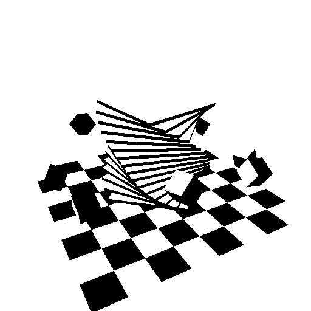
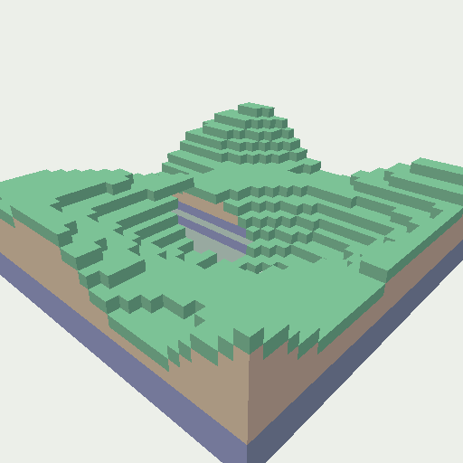

A COLLECTION OF PLAYABLE WORLDS
Small worlds.
Simple rules.
✳
A field of grass. A flock in motion.
A puzzle that turns on its side.
Open a world and see what happens.

01 / PLAYABLE PUZZLEA MATTER OF PERSPECTIVE
TURN
Stuck? Turn the world.
Twenty-six little puzzles about seeing another way through.
Things in motion
TOUCH, DRAG, EXPLORE
02↗Meadow
WIND & GROWTHLet a breeze pass through 4,096 blades of grass.

03↗Cloth
SOFT BODIESPull a corner. Feel a little tension.

04↗Particle Life
EMERGENT SYSTEMSSix species. A few rules. Unexpected company.

05↗Swarm
COLLECTIVE MOTIONGive a flock a nudge and watch the idea spread.

06↗Monochrome
KINETIC SCULPTUREA study in light, shape, and quiet movement.

07↗Voxels
EDITABLE WORLDSCarve a tunnel. Add a block. Make it yours.
These are live, interactive demos of one graphics engine. The same Bend source defines their rules, physics, and geometry; compiled JavaScript brings them to the browser.